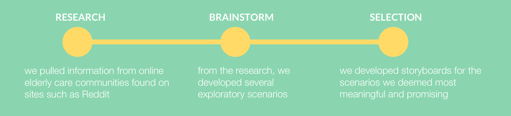

CARE AGENDA
Mobile Service Design | Peer Economy | Value Co-Production | Collaboration


CHALLENGE
How can we utilize the rise of peer economy to design an application which co-creates value between different kinds of users?
PROMPT
Design a formal report to relay information to both the engineering and marketing department of the Dow Chemical Company.
DELIVERABLES
Pitch presentation, inVision demo, process book
SKILLS
co-production of value, understanding personas, pitch making, ideating w/ scenarios and storyboards, UI design patterns, transition animations, ecosystem collection
RESPONSE
Working in a team of three, we created CareAgenda, a mobile application created for elderly care. It facilitates the responsibilities of caregivers and maximizes care by delegating tasks to multiple users comfortably.
PROCESS
Exploratory Scenarios
Storyboards

Goals & Desired Outcomes
Reduced mental and physical burden for everyone involved in the caretaking process
Easy way to manage helpers for the primary user
Easy way for helpers to manage their schedules on the app
A way to accurately track the condition of the individual in care
Facilitate the responsibilities of caregivers
Maximize care by delegating tasks to multiple users comfortably
Time is a valuable asset, we aim to only delegate tasks that must be completed by the caregivers